General procedure
Prerequisite: Before performing any fine-tuning, run the AWB initial tuning procedure to generate initial parameter values.
Use the following steps to make updates to a distance weight vector. Following
the procedure are some fine-tuning scenarios for distance weight vectors.
- Open the project and click the AWB tab.
- In the List View tab,
click Distance Weight Vector to show
the existing weight vector configuration.
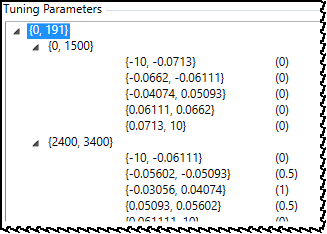 - To add a trigger region, highlight the row above or below
where you want to add the new trigger region, then click Add above or Add below to add a new row.Note: The tool does not allow adding a row above the minimum lux index or adding a row below the maximum lux index.
- To update a trigger or weight value, double-click the appropriate entry to open the edit dialog. Update the value and click outside the box to save the change.
- Click .
Fine-tuning scenarios for distance weight vector
To improve a purplish issue, expand the buffer zone to include more stats, as in the following example.
Figure : (L) Stats located outside gray zone boundary; (R) stats located inside
expanded boundary.
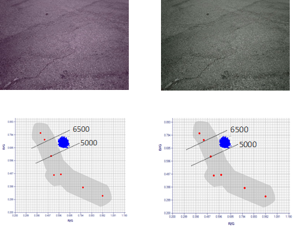
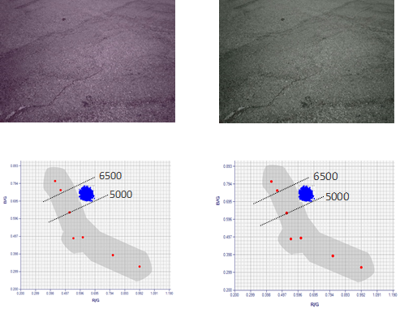
Figure : Expand the distance trigger boundary for a specified Lux Index/CCT to
include more stats.
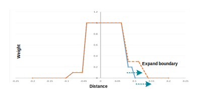
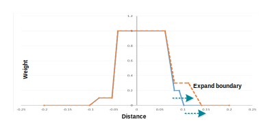
To correct a greenish issue caused by the current final decision point, add more distance triggers and update the weights to move the decision point, as in the following example.
Figure : Select position of the preferred final decision point and give more
weight to distance of the "new" position to push final decision point to the
left.
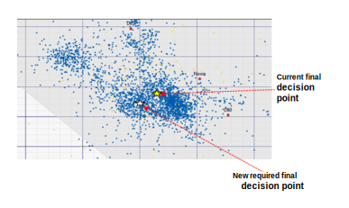
Figure : Estimate the CCT range for the revised decision point
location and estimate the distance from the reference line.
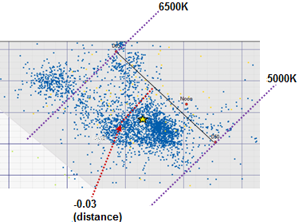
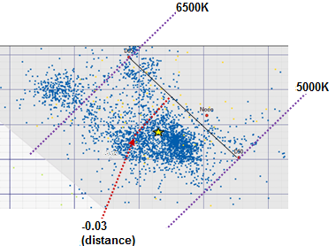
Figure : (L) Original values; (R) 3rd distance trigger is split into three trigger
levels and weights are adjusted to give more weight to the preferred location of
the final decision point.
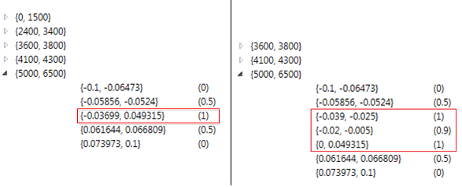
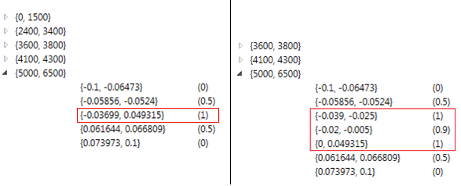
Figure : Blue line illustrates how five distance triggers become seven
to add granularity to weights in specific distances.
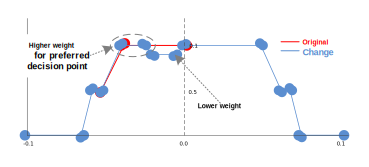
Alternatively, keep the same number of distance triggers but change the start/end and weight values to move the decision point, as in the following example.
Figure : (L) Original values; (R) 2nd and 3rd distance trigger values and weights
are adjusted to give more weight to the preferred location of the final decision
point.
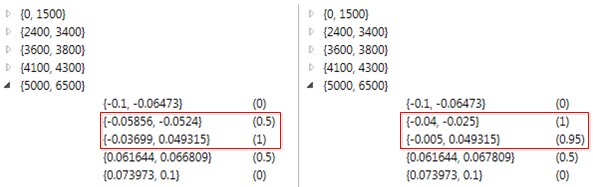
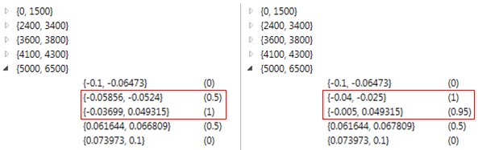
Figure : Orange line illustrates changes to 3rd distance trigger start/end and weight
values.